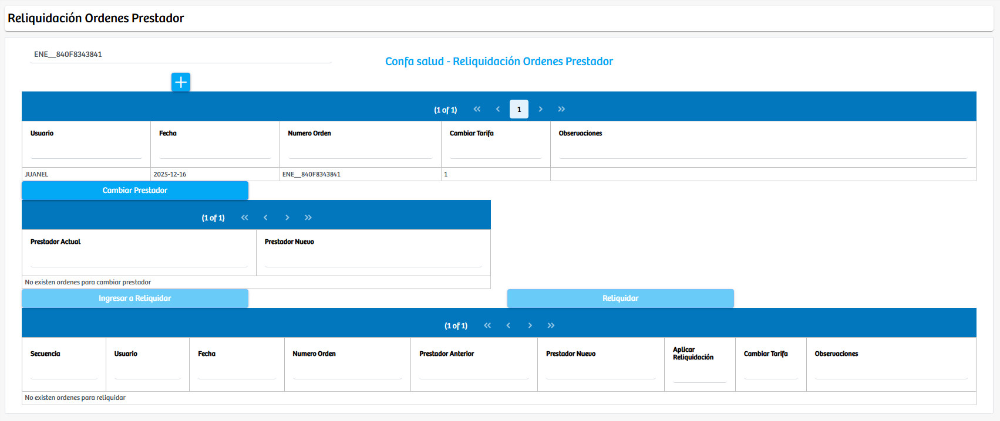
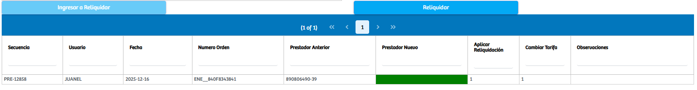
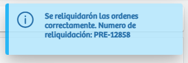

Modulos Sas-Web
Funcionalidades
Reliquidar Ordenes Prestador
El módulo Reliquidar Ordenes Prestador permite gestionar el proceso de reliquidación asociado al cambio de prestador en una orden específica. Al ingresar al módulo, se presenta un campo donde el usuario debe digitar el número de orden que desea revisar. Una vez ingresado el consecutivo, el sistema carga automáticamente la información relacionada, mostrando una tabla con los datos básicos de la orden, como usuario, fecha, tipo, número de orden y observaciones.
Desde esta vista inicial, se habilita el botón Cambiar Prestador, el cual al ser presionado muestra una segunda tabla en la que aparece el prestador actual asociado a la orden y un selector que permite elegir el nuevo prestador al cual se desea trasladar la responsabilidad del servicio.

Después de seleccionar el nuevo prestador, el sistema habilita el botón Ingresar a Reliquidar, que al ser ejecutado envía la orden a un panel inferior donde se visualiza la preliquidación. En esta tabla se presenta un resumen del movimiento, incluyendo la secuencia generada, el usuario que ejecuta la operación, la fecha, el número de orden, el prestador anterior, el prestador nuevo y los indicadores que señalan si la reliquidación aplicará cambios.
Una vez verificada la información, el usuario puede finalizar el proceso mediante el botón Reliquidar, con lo cual el sistema ejecuta la actualización, genera el número oficial de reliquidación y muestra un mensaje confirmando que la operación fue realizada exitosamente.
Este módulo replica la lógica operativa del proceso de reliquidación por convenio, pero enfocado específicamente en la actualización del prestador asignado a una orden. Su diseño permite realizar cambios controlados, asegurar la trazabilidad de cada modificación y garantizar que las órdenes migren correctamente entre prestadores según los requerimientos administrativos o asistenciales.